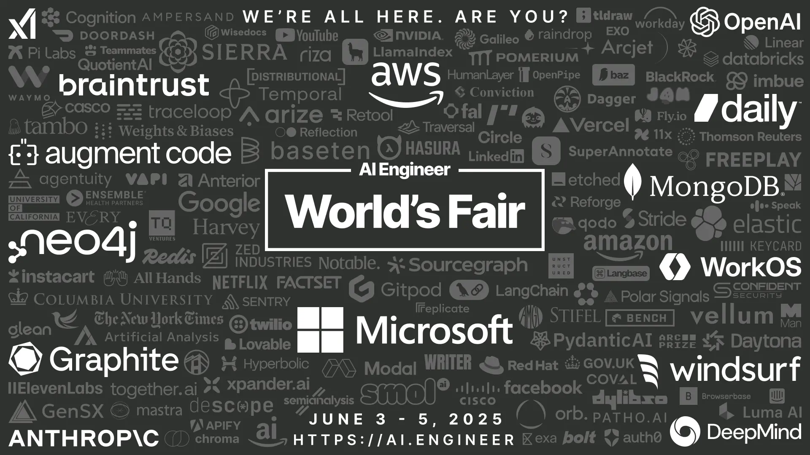
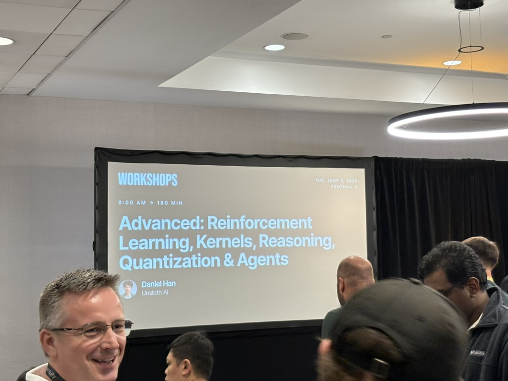
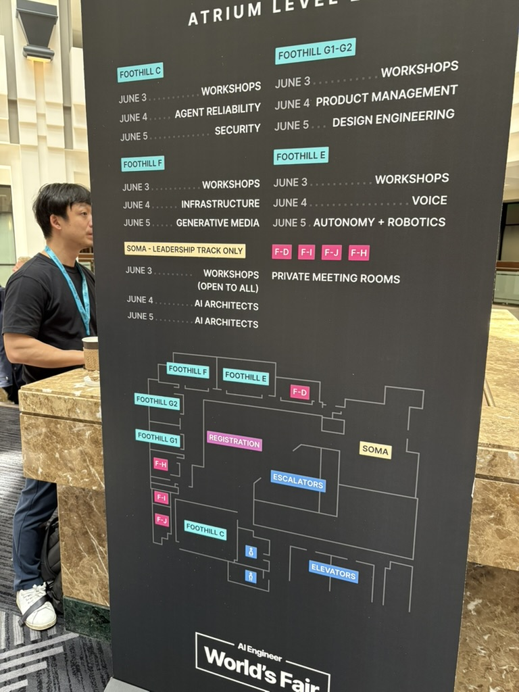
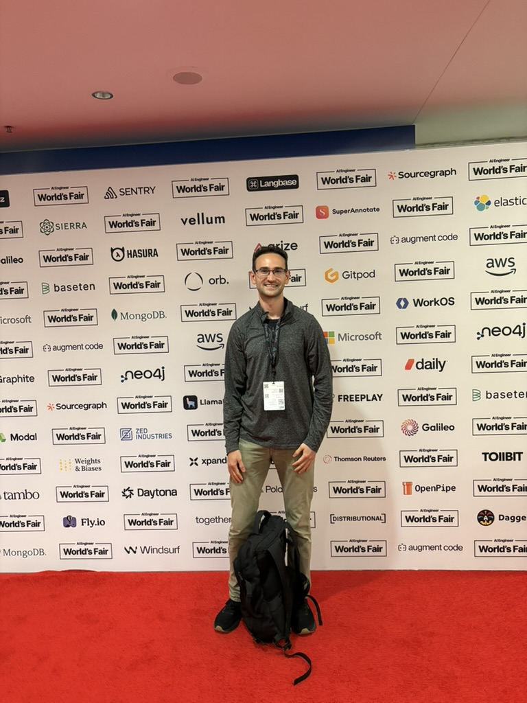

This blog post will go over my recent experience of the AI Engineer Worlds Fair 2025. I wanted to recount the events and experience when it’s still fresh in my mind.
Brief Introduction
The AI Engineer’s World’s Fair is a conference in San Francisco that brings AI practitioners and researchers alike. The conference is meant to showcase the latest advancements and innovation in the space.
The conference is an amazing way to collaborate, network, learn and connect with the leading industry leaders and researchers. This gives you a glimpse of what is on the horizon and what opportunities lie ahead. It’s mainly the reason why I’ve gone to it a second time in a row so far.
Before attending the event, I had hoped to receive several things from this event.
Connect with entrepreneurs, founders, researchers and amazing people
Learn about latest advancements in agents and models
Find next opportunities to work on in the space
Needless to say I had gotten all of them plus much more.
Event Overview
The AI Engineer’s World’s Fair 2025 was absolutely massive - 3,000 attendees packed into San Francisco’s Marriott Marquis from June 3-5. Having attended last year, seeing it double in size really drove home how fast this community is growing. The organizers positioned it as “NeurIPS for Engineers,” which felt accurate - all the cutting-edge technical content, but focused on people actually shipping code.
What immediately struck me was the practical focus. No theoretical research papers or academic hand-waving. Instead, it was entirely focused on people who are actually building production AI systems. Every conversation I had was about real implementation challenges, not hypothetical possibilities.
The three-day structure worked perfectly for my goals:
Day 1 was workshop immersion - I chose sessions on reinforcement learning and prompt engineering that directly aligned with my technical interests. The workshop format was brilliant; working on actual production problems with experts beats abstract tutorials every time.
Day 2 opened with industry keynotes and the expo hall. While the big tech companies had presence, I was more interested in the infrastructure providers and tooling companies. This was where I could really dig into the technical challenges of model serving and deployment.
Day 3 featured the most advanced sessions and those fireside chats where industry leaders actually shared the messy reality of building AI products. Plus the after-parties - where the real insights happened once people relaxed and talked about what’s actually not working.
With 18 tracks running concurrently, choosing sessions was tough. But having everything recorded with tight 20-minute time limits meant even if I missed something, I could catch up later. The focus and information density was impressive.
Key Highlights and Sessions
Day 1: Workshop Deep Dive
Day 1 was all about getting your hands dirty. I chose two workshops that really aligned with where I wanted to deepen my technical knowledge, and both delivered exactly what I was hoping for.
Advanced: Reinforcement Learning, Kernels, Reasoning, Quantization & Agents by Daniel Han (9:00 AM) was fantastic. Daniel was such a funny guy and really kept the crowd engaged throughout the entire 2-hour session. He went deep into the fundamentals of RL in a way that was both accessible and technically rigorous.

My key takeaways: You need to have SFT (Supervised Fine-Tuning) first to get the right format and basic reasoning capabilities in place, then using RL can get you significant improvements from there. The discussion about quantization was insightful - seeing how models like Qwen2.5B can be quantized down to 4bit while maintaining performance was incredible. The conversations throughout were really engaging, with lots of back-and-forth between Daniel and the audience.
Daniel’s workshop sparked my interest in Dynamic 4-bit Quantization, which I definitely want to dive deeper into. Here’s what I learned from researching this technique:
What is Dynamic 4-bit Quantization? - Reduces neural network memory requirements by 4x (from 32-bit floats to 4-bit integers) - Computes activation ranges on-the-fly at runtime rather than using pre-computed static ranges - Enables substantial memory and power savings for model deployment
Key Benefits: - Memory Efficiency: 4x reduction in storage requirements for weights and activations - Power Savings: Energy consumption dominated by memory access gets significantly reduced - Flexible Precision: Can adapt quantization ranges dynamically based on input data
Recent Advances: - Post-Training Approaches: No need for fine-tuning or full dataset access - GPTQ Method: Specifically designed for large language models like GPT - 4.6-bit Schemes: Novel approaches that balance accuracy and efficiency
The Trade-off: While 4-bit quantization can introduce some quality loss compared to 8-bit or full precision, recent research shows it’s possible to maintain near-original accuracy with proper techniques.
This connects perfectly to Daniel’s discussion about DeepSeek-R1’s extreme quantization - understanding dynamic 4-bit quantization could be key to building efficient production AI systems.
Personal note: I’m a big fan of Unsloth for fine-tuning work, so hearing Daniel’s thoughts on efficient training techniques really resonated with me.
The afternoon Prompt Engineering & AI Red Teaming session with Sander Schulhoff (3:30 PM) was equally valuable. While waiting in line, I got to chat with an ML researcher from Instacart about the current state of prompt engineering, which was a nice warm-up to the session.
Sander covered what prompt engineering really is and emphasized that prompts are still a core technique used across many applications. He spent significant time on “prompt injection” and jailbreaks, which are apparently still major issues even today. The interactive red teaming competition at the end was both educational and fun.
He runs HackAPrompt.com, the world’s first AI red teaming competition platform - maybe I should test my prompt skills there and see if I can flex a bit 😄
Personal take: Seriously though, I honestly don’t like that prompt engineering is a thing we have to deal with, but it’s clearly not going away anytime soon as far as I can see. The fact that we still need these techniques shows we’re not quite at the point where models just “understand” what we want naturally.
Day 2: Industry Heavyweights and Technical Deep Dives
I arrived around 8:30 AM to grab breakfast - they were serving small croissants, pastries, and fruit. After that, we were corralled into the massive keynote hall that housed over 1,000 people, with a large stage and impressive side projectors.
Swyx kicked us off around 9:00 AM, mentioning how the event had doubled in size from last year. One insight that really stuck with me was his mental model shift: instead of getting caught up in definitions of what constitutes an “agent,” think about the ratio of AI to human work - 1:1, 1:10, 1:100? I really like this classification as a useful framework.
Microsoft’s Asha Sharma keynote was impressive in terms of presentation quality - they really had the animations and flow down perfectly. The demo went off the rails though when they demonstrated an agent that was slow with internet connectivity and would just speak over you. The woman on stage kept saying “AWESOME” trying to get the LLM to stop talking, which only prompted it to talk more! This caused delays for all subsequent speakers, and the internet was down throughout.
Sarah Guo’s VC talk on “State of Startups and AI 2025” was actually excellent. She managed to keep the crowd engaged despite the technical difficulties. Her thesis was that AI applications will broaden, and the moat is execution - speed and execution are the name of the game. I pretty much agree, though when she talks about execution, I think the human/customer side is more important than just code nowadays.
Simon Willison’s “2025 in LLMs so far” was characteristically funny. He gave a humorous benchmark about pelicans on a bike, and it’s actually incredible how models are getting better at these bizarre tasks - quite remarkable progress.
After the morning keynotes, I went straight to the expo hall. I was on a mission to really check out the companies and get to know them personally.

I stayed in the expo hall until midday when lunch was being served. The food was really good - rice, beef, and avocado. I even met a guy who was head of Linear, which was super cool! After lunch, I caught some of the afternoon sessions.
I was planning to meet up with a friend, Ronan from Trelis Research - I’m a long-term subscriber to his YouTube channel and really wanted to meet him in person. Luckily, I was able to attend some excellent infrastructure talks beforehand.
Infrastructure Track Sessions were incredibly insightful:
Dylan Patel’s “Geopolitics of AI Infrastructure” was packed - I could only catch bits from standing in the doorway since the room was completely full. His insights about nations racing to secure critical AI hardware and control compute capacity were eye-opening.
Kyle Kranen’s “Hacking the Inference Pareto Frontier” showed how prefill and disaggregation techniques achieve speedups. It was fascinating to see the many techniques available to adjust the curve between cost, quality, and latency.
Robert Wachen’s “Flipping the Inference Stack” drew analogies to how the iPhone enabled Uber and similar platforms. His key point: we’re moving into an inference-dominated world where most compute will be generated, and inference will become the bottleneck for many applications.
I had a brief chat with Ronan about this—if you haven’t seen his content, I highly recommend checking it out. It’s really excellent!
I headed downstairs where they were serving snacks just before the final keynotes of Day 2.
Final Day 2 Keynotes:
AWS’s agentic services presentation was first, though I don’t remember most of the details.
Windsurf was particularly interesting as they’re expanding beyond just the developer stack. This made me a bit concerned - what was I going to do? Was I going to just click “accept”? Was my task reduced to prompting and clicking either accept or reject? It’s incredible technology but also a little concerning, especially since I’m on the forefront of using this kind of tech.
Greg Brockman’s keynote was the main highlight. He has an impressive track record - really insane actually. A few key points caught my attention:
AI is a full infrastructure problem - it’s not one thing, it’s everything: money, hardware, software, people, etc.
We’re back to “basic research” - the transformer architecture is strong, but new advancements need to be made to push the frontier.
Personal takeaway: I need to use this new technology to upskill and expand myself, especially as things are growing even more rapidly.
The expo format was perfect - technical demonstrations over marketing fluff. Every exhibitor had to provide hands-on experiences or detailed technical content. I spent hours at the Temporal booth learning about workflow orchestration patterns for agent systems.
Day 3: Advanced Architectures and Real Talk
Same as Day 2, I arrived around 8:30 AM to grab breakfast - they were serving the same croissants, fruits, and small pastries. We kicked off strong right away.
Logan Kilpatrick’s Gemini presentation started us off. I remember he was part of OpenAI last year before switching to Gemini, but Gemini has been incredibly strong. They’ve shipped so many excellent features - it’s become a really solid product. I use it for YouTube and vision tasks regularly. Gemini is genuinely my go-to model for vision work.
Jack Rae’s “Thinking Deeper in Gemini” talk about thinking was fascinating. Thinking is really a new paradigm that adds a dimension that’s super interesting. It actually increases latency and cost but dramatically improves quality. Figuring out how to control thinking is going to be incredibly effective, especially when paired with tool calling.
Manu Goyal’s “Why should anyone care about Evals?” was just funny. I’m sure Braintrust has good evals, but it’s still about iterating on prompts, which remains very challenging.
Solomon Hykes’ “Containing Agent Chaos” was particularly interesting, and I really need to try their tools. They’re from Dagger and are open source. He literally open-sourced on stage and got 13k stars within 20 minutes - that’s insane for an audience of only 3k people. Their idea is simple but brilliant: Docker + Git + LLMs. Super simple, but I think I want to start using that pattern on my machine when it’s more stable. I can see it being a powerful primitive.
Jesse Han’s “The infrastructure for the singularity” from Morph was weird. I love their artwork - it’s actually amazing and I want to understand how they created the art more than the tech. The tech I can figure out. The presentation felt like a “sermon” or had religious undertones about LLMs, which was slightly uncomfortable, then they revealed they’re just a browser/desktop sandbox.
After the strong opening keynotes, I spent the rest of Day 3 diving deep into the more technical sessions. This is where the conference really delivered on its promise of practical, production-focused content.
Reasoning + RL Track Sessions:
I attended several excellent RL sessions:
Will Brown’s “Training Agentic Reasoners” - I only briefly caught this, but the essence was doing RL with tool calling and integrating this with training. I think this approach will provide some of the most significant rewards.
Greg Kamradt’s “Measuring AGI: Interactive Reasoning Benchmarks” was super cool. They mentioned releasing a preview of interactive game-like tasks, reminiscent of Halite. The main takeaway: giving agents an environment with no predefined goal - they need to figure out objectives on their own.
Kyle Corbitt’s “How to Train Your Agent: Building Reliable Agents with RL” and Nathan Lambert’s “A taxonomy for next-generation reasoning models” were higher-level overviews, but really covered similar ground.
I also attended Philip Kiely’s “Optimizing inference for voice models in production” which was very informative.
The advanced technical tracks included SWE-Agents (autonomous software engineering), Reasoning + RL (the new frontier of inference-time scaling), Evals (finally getting serious about measuring AI system performance), Retrieval + Search (going beyond basic RAG), and Security (critical as agents get more access). One session on production monitoring for AI applications was particularly eye-opening - traditional APM tools just don’t cut it when you’re dealing with probabilistic systems.
The fireside chats were where I got the most value. Technical leaders sharing the stuff they don’t usually talk about in public: technical debt in AI systems, hiring challenges (spoiler: everyone’s struggling to find good AI engineers), and the painful lessons learned from production AI failures. These unguarded moments of honesty were worth the conference admission alone.
I got to chat with a friend from the AI Engineering hackathon after lunch, then headed into the final keynotes.
Final Day 3 Keynotes:
Micah Hill-Smith and George Cameron’s “Trends Across the AI Frontier” from OpenRouter highlighted how we’re living in an increasingly multimodal and multimodel world.
Sean Grove’s “Prompt Engineering is Dead - Everything is a Spec” from OpenAI was particularly interesting. His thesis: prompts should be your “spec” - the most important document, with “code” or any “artifacts” just being results from the spec. It’s an interesting idea that I’m definitely going to try out.
After walking out, I got to see friends from the AI Engineering hackathon and say goodbye to people I’d met. We decided to go to the RunPod after-party, which was actually awesome - a wonderful closing party with amazing people, conversations, and drinks.
I got back at 10:30 PM, and that was that. Overall, I was extremely happy with the experience. I achieved everything I set out to do and will be following up on people, concepts, and getting back on track with full vigor.
The after-parties were worth staying for. There’s something about informal conversations over drinks that brings out the real challenges people are facing. I had more meaningful technical discussions in those few hours than in most conference hallway tracks.
Key Insights and Themes
With a ~6% acceptance rate from over 500 applications, every session delivered real value. What made this conference special was that every speaker was a practitioner first - people actually shipping AI systems to production, not just talking about possibilities.
Several key themes emerged across the three days:
The Infrastructure Challenge is Real: From Dylan Patel’s geopolitics insights to the technical infrastructure sessions, it’s clear that building reliable AI systems requires thinking about the entire stack - from hardware and inference optimization up to client code and application.
Agents Everywhere: Almost every conversation touched on agent architectures. But the focus has shifted from “cool demos” to “production reliability.” People are building systems that need to work consistently for real users.
Speed of Execution: Sarah Guo’s thesis resonated throughout the event - in AI applications, the moat is execution speed. The companies winning are those shipping fast and iterating based on real user feedback.
New Paradigms Emerging: From Jack Rae’s insights on “thinking” models to Sean Grove’s “prompt-as-spec” approach, we’re seeing new patterns that could fundamentally change how we build AI systems.
The Human Element: Despite all the technical advancement, the most successful implementations still prioritize the human/customer experience over pure technical capability.
Personal Takeaways
This was my second year attending, and the growth is remarkable - both in scale and maturity. Achieving my three main goals (connecting with amazing people, learning about latest advancements, finding next opportunities) plus much more made this trip incredibly worthwhile.
Technical Learning: The workshops were fantastic, especially Daniel Han’s RL session and the prompt engineering deep-dive. I have concrete things to follow up on - Dynamic 4-bit Quantization, exploring HackAPrompt.com, and definitely trying out that Docker + Git + LLMs pattern that got 13k stars in 20 minutes.
Infrastructure Focus: The infrastructure sessions confirmed my interest in the lower-level AI stack. Meeting people working on model serving, inference optimization, and the actual engineering challenges of production AI systems showed me there’s meaningful work to be done beyond just building full-stack applications.
Networking Success: From meeting the Linear head over lunch to connecting with Ronan from Trelis Research, to the RunPod after-party conversations - the human connections were incredible. Having a notebook full of contacts and follow-up opportunities is exactly what I hoped for.
Career Direction: Greg Brockman’s insight about using new technology to upskill and expand resonated deeply. As AI capabilities grow, I need to stay on the frontier and find increasingly impactful work rather than just riding the wave.
Prompt-as-Spec: Sean Grove’s “Everything is a Spec” concept is something I’m definitely going to experiment with. The idea that prompts should be the primary document with code as output is fascinating and worth testing in my own projects.
The most valuable insight? This community is solving real problems right now. The conversations at after-parties revealed the genuine challenges people face shipping AI to production, and that’s where the most interesting work is happening.
Conclusion
Walking out of the Marriott Marquis after three intense days, I’m energized and optimistic about where AI engineering is heading. This conference delivered exactly what I hoped for - technical depth, genuine community, and concrete next steps for my own learning and career.
The sheer scale (3,000 attendees, double from last year) shows how fast this field is growing, but what impressed me most was the maturity. These weren’t pie-in-the-sky demos or research papers - these were real engineers sharing real solutions to real problems. From dealing with inference bottlenecks to building reliable agent architectures, every conversation was grounded in production reality.
The infrastructure focus throughout the event reinforced my belief that there’s meaningful work to be done beyond just building applications. The challenges Robert Wachen described about inference being the new bottleneck, Dylan Patel’s insights on AI geopolitics, and the Docker + Git + LLMs pattern that got 13k stars in 20 minutes - these are the kinds of lower-level problems I want to work on.
But beyond the technical content, it’s the community that makes this event special. Whether it was lunch conversations with the Linear head, catching up with Ronan from Trelis Research, or the late-night discussions at the RunPod after-party, the willingness to share both successes and failures creates an environment where real learning happens.

I’ll definitely be back next year - probably with some concrete projects influenced by what I learned here. If you’re building production AI systems and missed this one, put it on your calendar. The combination of cutting-edge technical content and authentic community makes it worth it.
Now, time to implement some of these ideas.